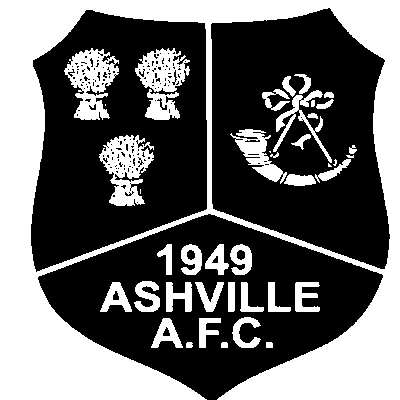

About the school
390 years on Caldy Hill
Calday Grange Grammar School is the oldest grammar school on the Wirral, founded all the way back in 1636 by a local landowner named William Glegg. It's a selective grammar school for boys, with a co-educational sixth form that's welcomed girls since 1985.
The school leans hard into STEM alongside a broad curriculum, and it's picked up Sportsmark Gold and Investors in People recognition along the way. Ofsted's most recent inspection, in December 2024, highlighted a school culture built on ambition, respect and pride, with pupils described as genuinely happy to belong there.
Outside the classroom there's a lot going on — the Combined Cadet Force, Duke of Edinburgh's Award, National Citizen Service, and a full sports and music programme. It's the kind of place where the school day doesn't really end at 3:30.
Quick facts
- Type Grammar
- Ages 11–18
- Sixth form Co-ed since 1985
- Setting Caldy Hill, West Kirby
- Enrolment ~1,500 pupils
My time there
On the pitch and off it
Beyond the classroom
House: Glegg.
Favourite subjects: Mathematics, Computing and History. Outside the classroom: Bronze DofE Award completed, and most evenings after school are spent training or playing for Ashville, my local team since 2022 — two league titles and a cup so far.
